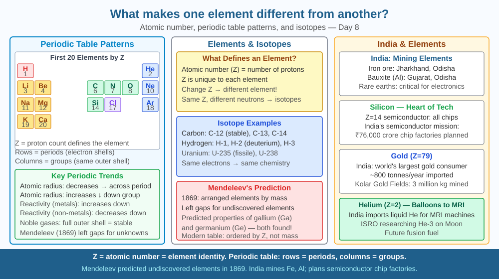

By the end of this lesson, you should be able to explain what uniquely identifies each element, describe isotopes, and predict what happens when two atoms have the same proton count but different neutron counts.
Gold and mercury look somewhat similar — both dense, shiny metals. Medieval alchemists tried for centuries to turn mercury into gold. Why is it impossible? What makes gold always gold and mercury always mercury?
Atomic number (Z): The number of protons in the nucleus uniquely identifies an element. Gold: Z=79. Mercury: Z=80. Different by ONE proton — but no chemistry can change Z.
The Periodic Table: Mendeleev (1869) arranged 63 known elements by atomic mass and noticed repeating chemical properties (periodicity). Modern table arranges by Z.
Periods and groups: Elements in the same group (vertical column) have the same number of valence electrons → similar chemical properties. Group 1 (Li, Na, K) all react vigorously with water. Group 18 (noble gases) all have full outer shells → inert.
Isotopes: Same Z, different number of neutrons (N). Same element, slightly different mass. - Hydrogen: ¹H (0 neutrons), ²H deuterium (1 neutron), ³H tritium (2 neutrons, radioactive) - Carbon: ¹²C (stable, 98.9%), ¹³C (stable, 1.1%), ¹⁴C (radioactive, trace)
Ion: Atom that gains or loses electrons. Na⁺ (lost 1e), Cl⁻ (gained 1e). Still the same element.
Think of the periodic table as a phone directory where the address (atomic number Z) is the only truly permanent identity:
The SVG shows a section of the periodic table from Groups 1 to 18, with three highlighted zones that illustrate the lesson's three core ideas.
Zone 1 (gold vs mercury, Z=79 and Z=80) is circled in amber, with an arrow pointing to the one-proton difference and the label "one proton separates these two elements — no chemistry can cross this gap." Zone 2 shows the Group 1 column (Li, Na, K, Rb, Cs) highlighted in blue, with valence electron count = 1 indicated for each and a note "same outer shell → same reactions with water." Zone 3 shows the three hydrogen isotopes side by side: ¹H, ²H, ³H — all with Z=1 (one proton) but different neutron counts (0, 1, 2), demonstrating that isotopes share a position on the table but differ in mass. An inset shows a sodium atom losing an electron to become Na⁺, with the label "ion: same Z, different electron count."

India's Geological Survey identifies mineral deposits using elemental composition. The Kudremukh iron ore mines (Karnataka) are identified by high iron (Z=26) content. Kerala's rare earth elements (cerium, lanthanum, neodymium) are separated by their different atomic numbers and electron configurations for use in magnets, phosphors, and catalysts. India's atomic energy programme specifically needs uranium-235 (Z=92, A=235) separated from uranium-238 (Z=92, A=238) — same element, different isotopes, very different nuclear behaviour.
This isotope separation is one of the most technically demanding processes in engineering. Both U-235 and U-238 have identical chemistry (same Z, same electron configuration) so they cannot be separated by any chemical reaction. Instead, India's uranium enrichment plants use centrifuges spinning at tens of thousands of RPM to exploit the tiny mass difference between UF₆ molecules containing U-235 and U-238 — a direct consequence of isotopes having identical chemical identity but different mass.
Flame test: Different metal salts burn with distinctive colours. Sodium → yellow (street lights). Potassium → violet. Copper → green. Lithium → red. These colours come from electrons jumping between energy levels specific to each element's electron configuration — a fingerprint of the element's atomic structure.
Try this at home or in the school lab: dip a clean wire loop into each of the following salt solutions in turn — sodium chloride (table salt), potassium chloride (available as a salt substitute), and copper sulfate (available in hardware stores as a fungicide). Hold each loop in a gas flame and record the colour. Each colour is a unique atomic signature — no two elements produce exactly the same spectral fingerprint.
Transmutation — changing one element into another — IS possible, but only by changing the number of protons. Nuclear reactors do this accidentally: neutron bombardment converts uranium-238 into plutonium-239 (gaining a proton via beta decay from a neutron). Particle accelerators can create new elements by firing nuclei at heavy targets. Elements 113 (nihonium), 115 (moscovium), 117 (tennessine), 118 (oganesson) were confirmed in 2016 — the heaviest known elements, lasting microseconds before decay.
Predict: Mendeleev left gaps in his periodic table for elements he predicted had not yet been discovered, based on the pattern of properties in surrounding elements. Using the logic of periodicity (same group = same valence electrons = similar properties), predict two properties of the element in Group 2, Period 4 (calcium, Z=20) given that magnesium (Group 2, Period 3) reacts with water slowly and beryllium (Group 2, Period 2) barely reacts. Does reactivity increase or decrease going down Group 2?
What property uniquely identifies and distinguishes one element from all others?
Correct answer: C
Why is understanding the mechanism that makes elements different more valuable than listing their properties?
Correct answer: A
If two atoms had the same number of protons but different numbers of neutrons, what would you predict?
Correct answer: C
Mendeleev predicted the existence of an unknown element he called "eka-aluminium" (below aluminium in Group 13) based on gaps in his periodic table. He predicted: atomic mass ~68 u, density ~6 g/cm³, melts below 100°C, forms an oxide of formula M₂O₃.
When gallium (Z=31) was discovered in 1875, its properties matched Mendeleev's predictions almost exactly. Using the concept of groups and periodicity, explain the logic Mendeleev used to make each of these four predictions. Then identify one property of gallium (you may look up its actual values and compare) that Mendeleev's periodic pattern would have predicted accurately, and one property that might have been harder to predict without knowing its exact atomic structure.
Mercury (Z=80) is a liquid at room temperature — almost unique among metals. The reason is relativity. Mercury's electrons move so fast (because the nucleus has 80 protons pulling them in very tightly) that they reach a significant fraction of the speed of light. At that speed, Einstein's theory of special relativity predicts they gain mass and shrink their orbits — making mercury's outer electrons less available for bonding. Weaker metallic bonds mean mercury liquefies at −39°C, far below the melting points of neighbouring metals like gold (+1064°C) and thallium (+304°C). Atomic number → electron speed → relativistic effects → liquid metal: the periodic table has quantum mechanics and relativity hidden inside it.
An element's identity is locked in its proton count — isotopes with different neutron numbers are still the same element, while atoms with even one extra or fewer proton are an entirely different element with different chemistry.